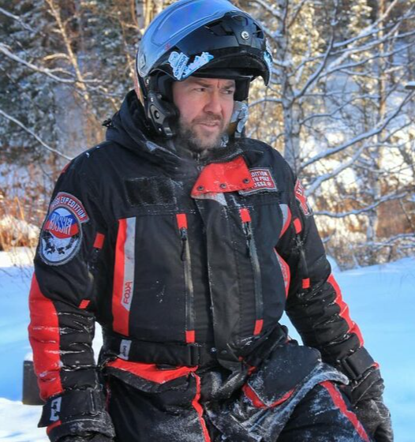
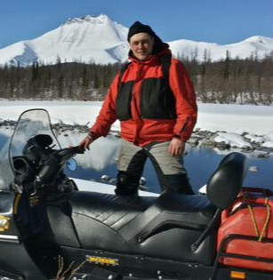

Перевал Дятлова
Пятидневная насыщенная экспедиция из Екатеринбурга через Вижай, Ушму и базу Ильича: снегоходный маршрут, мансийский быт, Отортен, баня и спутниковая связь.
Что вас ждёт
Пятидневная программа из Екатеринбурга через Вижай, Ушму и базу Ильича: техника, мансийский быт, Отортен, баня и спутниковая связь.
Схема экспедиции
Кликните по точке маршрута — справа появится краткое описание этапа.
Опыт экспедиции
Размещение, питание, техника и северная среда маршрута собраны в один цельный блок.

Проживание
Базы, приюты, гостевые дома или отели — в зависимости от маршрута.

Питание
Горячее питание, перекусы и понятная логистика еды на маршруте.

Техника
Снегоходы, сопровождение, связь команды и помощь с экипировкой.
Что входит
Показываем состав поездки честно, чтобы не было неожиданных расходов уже на маршруте.
Входит
- Встреча и трансферы по программе
- Проживание на маршруте
- Питание по программе
- Аренда снегоходов и топливо
- Сопровождение гидов и команды
- Разрешения, связь, аптечка и поддержка
Не входит
- Авиабилеты до точки старта
- Личные расходы и сувениры
- Алкогольные напитки
- Расширенная страховка, если нужна
Профессиональные гиды

Константин
Кузнецов
Опытный турист и снегоходный гид. Ни одну сотню раз посетил Маньпупунёр и Перевал Дятлова. Опыт снегоходных экспедиций — 12 лет.

Михаил
Берсенёв
Профессиональный снегоходный гид. Ежегодно сопровождает группы на Приполярный Северный Урал. Опыт снегоходных экспедиций — 10 лет.
Ответы на вопросы
В стоимость обычно входит проживание по программе, все трансферы на маршруте, аренда снегоходов, питание, сопровождение команды, топливо, базовая экипировка по программе, разрешения на посещение охраняемых территорий и связь команды в труднодоступных районах. Точный состав зависит от выбранной экспедиции и фиксируется до бронирования.
Обычно отдельно оплачиваются авиабилеты до точки старта и обратно, личные расходы, алкогольные напитки и расширенная индивидуальная страховка, если она нужна. Для индивидуальных маршрутов список дополнительных расходов согласовывается заранее.
Для некоторых маршрутов — да, но не для всех. Короткие и индивидуальные форматы можно адаптировать под новичков. Сложные экспедиции вроде Приполярного Урала или Маньпупунёра требуют нормальной физической формы и готовности к суровой погоде. Лучше обсудить это с нами перед бронированием.
Да, зимняя экспедиция требует правильной одежды. Мы заранее отправляем список вещей и подскажем, что обязательно, что можно арендовать, а что лучше не брать. Если чего-то нет, часть экипировки можно получить на время экспедиции по предварительной договорённости.
В городах и на базах связь может быть, но в горах, тайге и арктических районах интернет часто отсутствует. Команда использует доступные средства связи и заранее планирует контрольные точки маршрута.
Да, в некоторых экспедициях это возможно. В таком случае стоимость будет пересчитана, потому что аренда техники не понадобится. Важно заранее согласовать модель, состояние снегохода, топливо, доставку и требования безопасности.
Оставить заявку на направление
Оставьте контакты — мы подберём маршрут, даты и формат под вашу группу.